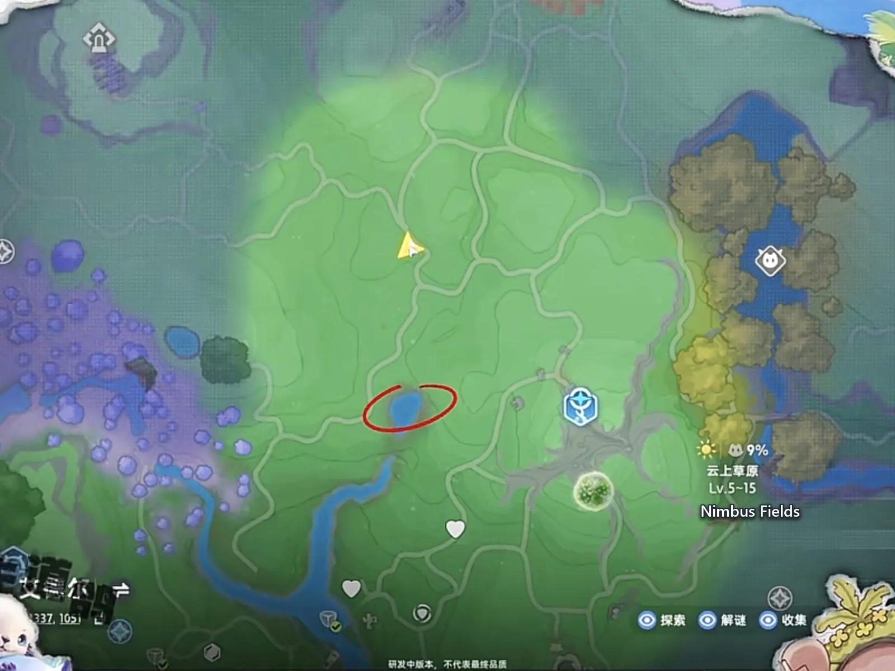
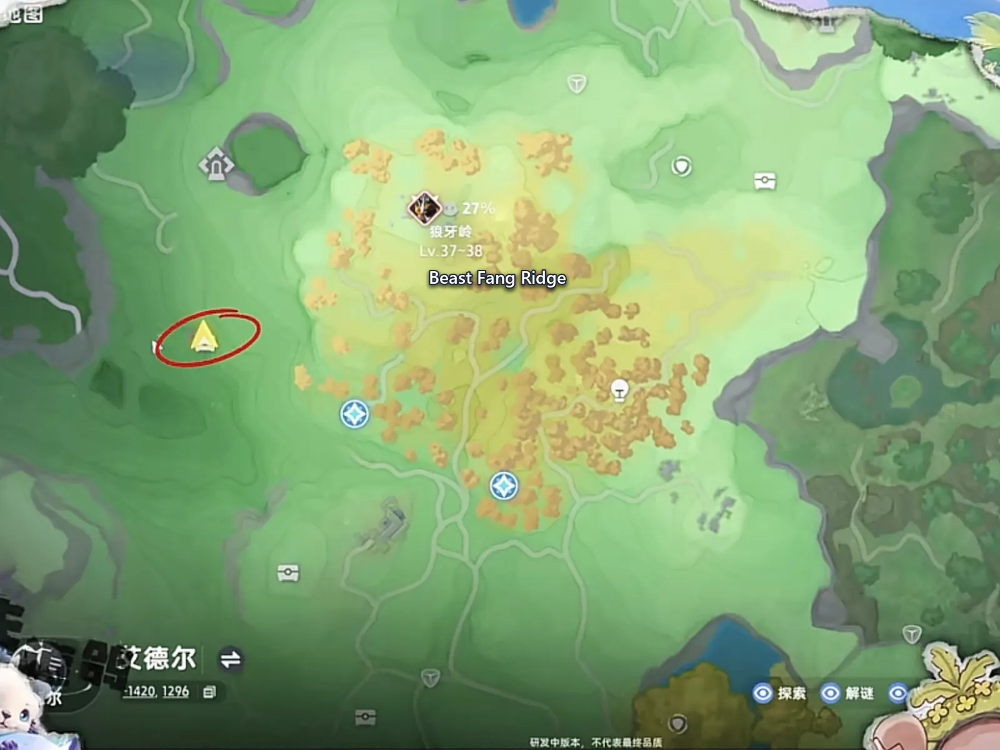
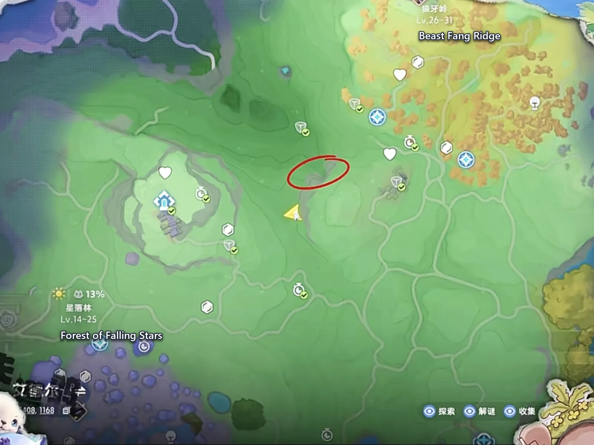
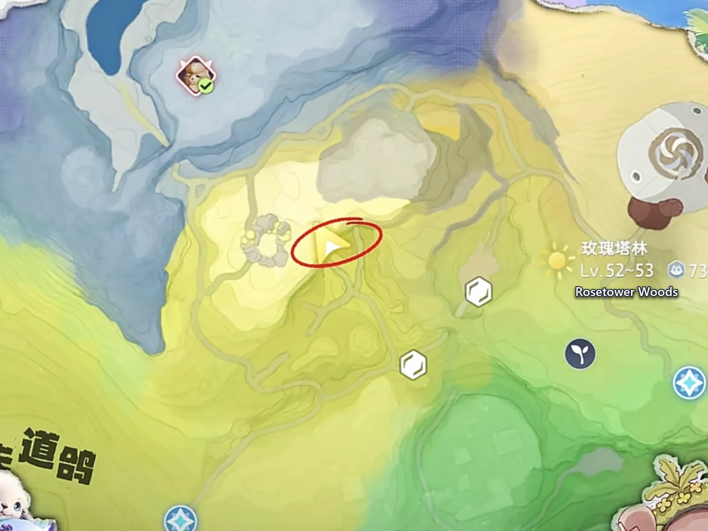
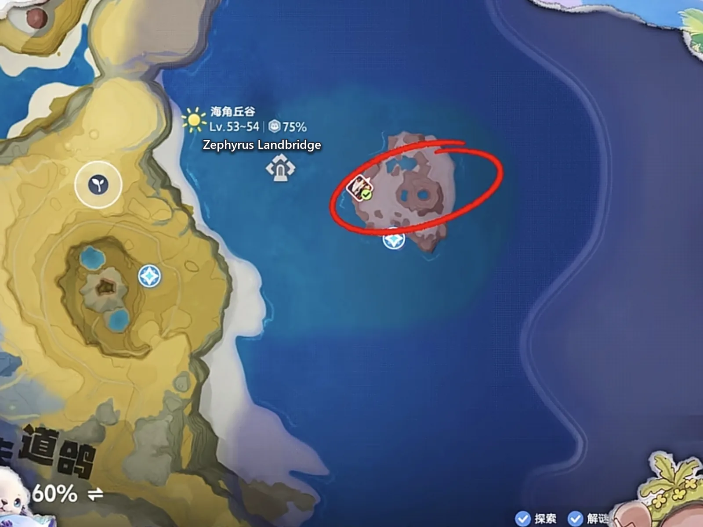

Home首页 / Guides攻略 / The Hidden Bosses: Where the Five Doors Are, and How to Break Them《伊莫》隐藏 BOSS：入口藏在哪儿，门要怎么破
Checked核对于 October 12, 20262026 年 10 月 12 日
The Hidden Bosses: Where the Five Doors Are, and How to Break Them《伊莫》隐藏 BOSS：入口藏在哪儿，门要怎么破
Five Alphas that are not standing out in the open: where each door is, what is blocking it, and which Aniimo you have to be holding to get through.五只不在露天的 Alpha：每一道门在哪、门口挡着什么、这趟该带哪只伊莫。
Hidden bosses are not hard to fight, they are hard to find. Each of the five below stands behind something — a cave mouth sealed with ice, a pit roofed over with vines, a wall with a boss on the far side of it — and the door is the whole problem. What is in the way decides which Aniimo you have to be holding when you arrive, and almost nothing else does.隐藏 BOSS 难找，难的从来不是打，是看见那道入口。下面这五只都卡在一个东西后面 —— 被冰封住的洞口、被藤蔓盖住的深坑、一堵墙的另一侧 —— 而门就是全部的问题。挡在门口的是什么，决定了你这趟该带谁，别的几乎都不重要。
All five are Alpha Aniimo, not a tier of their own: they have rows on the boss page, in the same table of seventeen. The difference is where they stand. The rest patrol a stretch of open ground; these five are inside something, and the entrance is not marked.这五只都是 Alpha，不是另立的一档 —— BOSS 页那张十七只的表里就有它们。区别只在站的位置：其余那些在一片露天的范围里走动，这五只待在某个东西里面，而入口没有任何标记。
One errand before any of it. At the Branch, 120 Lumin Amber buys the node the boss page calls the Earthwake Prayer — the thing that uncovers caves that were covered over, with the same entry noting that getting into them needs an Aniimo that can Tunnel. Our table also records two of the five below (Geoclaw and Minespine) as pins that do not appear on the map at all until that node has been paid.出门前有一件事要先办。 在 Branch 交到 120 颗辉耀琥珀（Lumin Amber），换到 BOSS 页说的那个节点 —— Earthwake Prayer。它做的事是把被盖住的地洞揭开，同一行还写着：要进去得有一只会 Tunnel 的伊莫。另外，下面这五只里有两颗图标（晶壳蟹和簇晶脊龙）在这个节点交齐之前根本不会出现在地图上。
Nimbus Fields: melt the ice, then walk in云上草原：把冰烧化，再往洞里走
Nimbus Fields has a cave mouth that is completely sealed with ice, and from a distance it reads as nothing but a shape in the hillside. Burn the ice away and the tunnel behind it runs one way, to Geoclaw, an Ice · Break Aniimo sitting at the far end. It is the lowest-level Alpha on this list — the boss page records it at 4–5 — and one of the two whose pin stays off the map until the Earthwake Prayer has been paid.云上草原有一处很隐蔽的洞口，整个被冰块封住 —— 远远看过去只是山壁上的一块形状，不像门。用火把冰烧化，钻进去一路往里，晶壳蟹（冰 · 击破）就在最里面。它是这份名单里等级最低的一只，BOSS 页记的区间是 4–5；也是两颗要等 Earthwake Prayer 交齐才肯出现在地图上的图标之一。

Beast Fang Ridge: burn the vines off the pit狼牙岭深坑：先断了藤蔓再下去
Beast Fang Ridge's pit is roofed over with vines, which is exactly why it does not look like a pit. Fire burns them off, and at the bottom is Glynsera, an Ice · DPS Aniimo — the boss page puts it south of Sanctum: Frigid Waters, in a blocked hole, at 29–32. A short way off there is a second, open-topped sinkhole, and it holds the species' Nighttime Form; if you want that version, collect it on the same trip.狼牙岭这口深坑被藤蔓盖得严严实实，所以从外面根本看不出它是个坑。用火把藤蔓烧断，下到坑底就能碰见霜锋狼（冰 · 输出）—— BOSS 页把它记在 Sanctum: Frigid Waters 以南、一个被堵住的洞里，区间 29–32。旁边不远还有一处天坑，藏着它的夜晚形态，想要这一版的顺路一起收了。

Beast Fang Ridge's crystal cave: blow the wall, then Tunnel狼牙岭水晶洞：炸开墙，再钻过去
Beast Fang Ridge has a second door, with a completely different lock. The cave that is full of crystals has several barrels of gunpowder standing in it: light them and the wall comes down. What is behind it is still not the boss. Turn into a crab and use the Tunnel skill — the one the whole crab line carries — to cross to the far side of the cave, and Minespine, a Rock · Break Aniimo, is waiting on the other end. It is the second of the two pins that stay off the map until the Earthwake Prayer.狼牙岭另有一个长满水晶的洞穴，锁法和刚才那口坑完全不同。洞里摆着几个火药桶，点着火药桶把墙炸开；但炸开之后还不是 BOSS —— 变成螃蟹，用Tunnel 钻洞技能穿到洞穴的另一侧，簇晶脊龙（土 · 击破）就等在那头。它就是两颗要等 Earthwake Prayer 才出现在地图上的图标里的第二颗。

Rosetower Woods: that wall is meant to come down玫瑰塔林：那堵墙可以直接撞碎
Rosetower Woods has a wall that is built to be broken, and the boss page already says what it takes: the Bear Cave's mouth is blocked by rock, and clearing it needs a movement skill that breaks walls. Turn into Magmarex — Fire · Rock · Break — and charge straight through it. Behind the rubble is Grizbo, a Rock · DPS Aniimo recorded at 43–50.玫瑰塔林那边横着一堵能打碎的石墙，BOSS 页也已经写明它要什么：Bear Cave 的洞口被岩石堵着，要清开得带会破墙的移动技能。变成熔岩暴龙（火 · 土 · 击破），用极星冲撞直接撞开 —— 墙后面就是暴睡熊（土 · 输出），记录的区间是 43–50。

Zephyrus Landbridge: fly in along the crater's rim海角丘谷：贴着火山口飞进去
Off the Zephyrus Landbridge coast there is a small island with a volcano crater in it. Fly in alongside the crater rather than over it, keep going, and the opening on the right — that is the whole instruction — leads to Magmarex, the Fire · Rock · Break Aniimo whose charge opens the wall in Rosetower Woods.海角丘谷的小岛上有个火山口。贴着火山口旁边飞进去，往里走，右手边那个口子通向熔岩暴龙（火 · 土 · 击破）—— 也就是玫瑰塔林那堵墙的钥匙。

Get the form right before you leave the house出门前先把形态选对
None of the five is a fight you win with numbers; every one of them is gated by the door and nothing else. Ice and vines both want fire, so keep a fire Aniimo on you. The crystal cave wants the barrels and the crab's Tunnel, and it does not care what level you are. Only Magmarex breaks a wall — and Magmarex is one of the five, so collect the island one first, come back, and the Rosetower wall opens on the second pass.这五道门没有一道是靠战力硬闯的，卡住你的永远是门口那点障碍，而障碍决定了你身上该备哪只伊莫。冰和藤蔓都怕火，所以火系伊莫随时带着；水晶洞要的是火药桶加螃蟹的 Tunnel 技能，跟你多少级没关系；能撞碎石墙的只有熔岩暴龙，而它自己也是这五只里的一只 —— 先把海角丘谷那只收下，再回头破玫瑰塔林的墙，顺序会顺很多。
So the order writes itself: pay the 120 Lumin Amber at the Branch first, then take the five region by region, and look at the door when you get there. What is blocking it tells you who to bring.顺着这个思路走一遍就很清楚了：先把 120 颗辉耀琥珀在 Branch 交齐、把洞穴打开，再按地区由近及远一个个清过去，到门口看一眼障碍长什么样，就知道这趟该带谁。